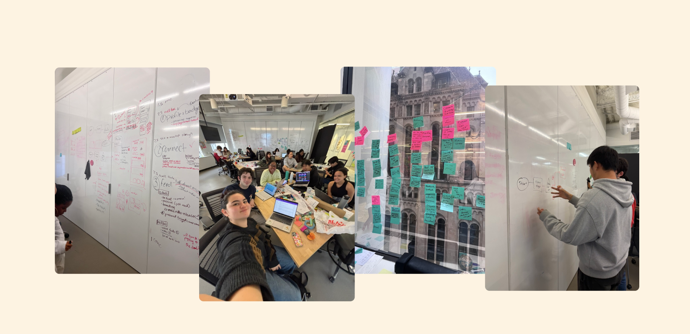
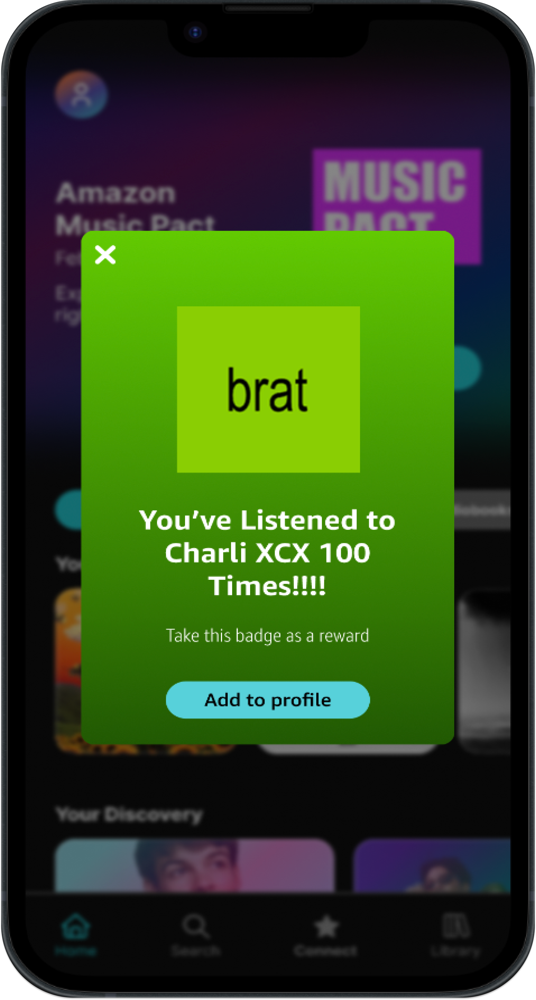
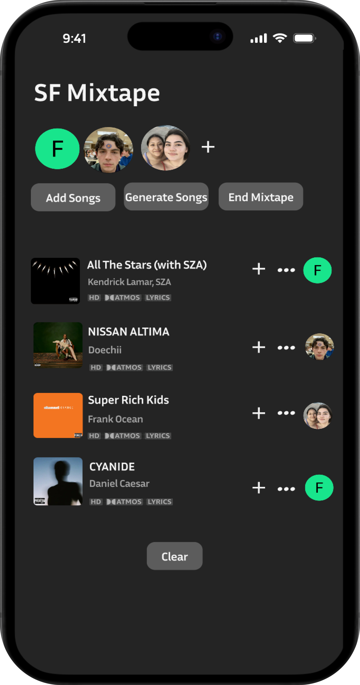
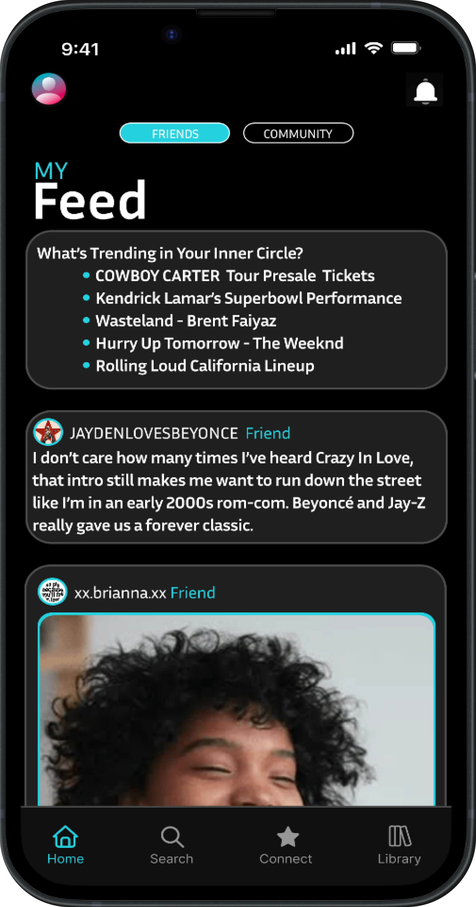
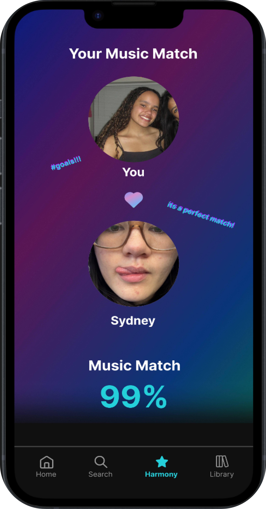
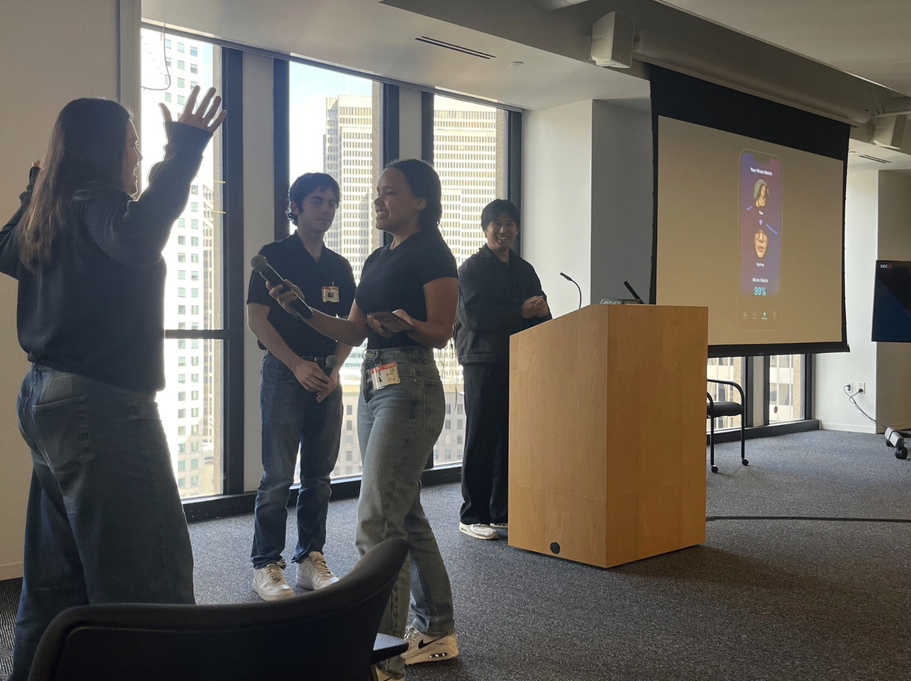

"Why would anyone ever use Amazon Music?"
That's what my teenage brother said when I told him about this project. Amazon Music's senior project manager tasked my team with finding out why the platform struggled to attract young users like him — and how we could change that.
20 young adults told us they'd always used either Spotify or Apple Music, and had no desire to switch. Our early user interviews and competitive analysis highlighted one key difference: on Amazon Music, there are hardly any ways to be social.
But 85% of people said they love to share their music taste with others. For them, Amazon Music's inability to facilitate that was a dealbreaker. So,
How might we transform Amazon Music into a social music playground that encourages fan-to-fan activity?
I worked in a team of design, engineering and computer science students to brainstorm ideas. We began by throwing our wildest dreams at the wall, and then narrowed them down and iterated through group work sessions, interviews and feedback from our client.

Using my journalism background, I led the charge with user research and crafting our final presentation. I also learned a lot from my team throughout the process, honing my Figma skills as we put together four high fidelity prototypes.

Users earn badges by attending concerts or becoming a top listener of an artist. They can display these on their profile to show off how big of a fan they are.

Collaborative playlists that let multiple users add songs and generate recommendations based on the group's collective music taste.

The epicenter of fan-to-fan interaction. Users can comment on music, see what's trending, and share posts — within their friend group or across the broader Amazon Music community.

A home for out-of-the-box experiences like "Music Pact," a music-based matchmaker, and "Fantasy Music Leagues," where users can bet on award show outcomes.
We presented our concepts to executives at Amazon's San Francisco office, receiving positive feedback for our thorough execution and engaging presentation — complete with live demos and skits.

Beyond just pushing me to improve my wireframing skills, this project showed me that great design is nothing without great communication. For users, this meant going through several iterations to ensure that our user flows were intuitive. For Amazon executives, this meant clearly illustrating the current landscape of Gen Z music listening so they could understand the reasoning behind each design decision.